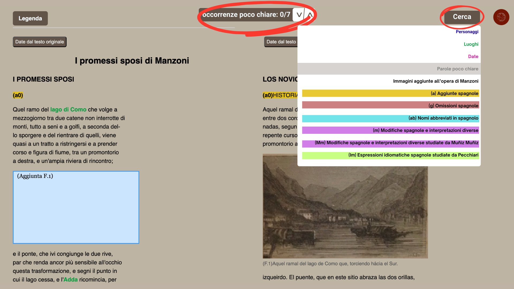
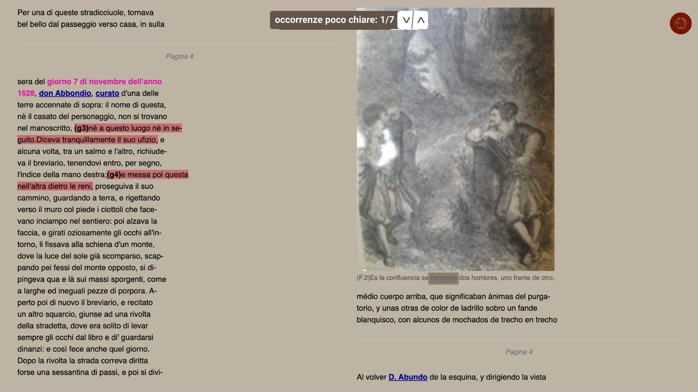
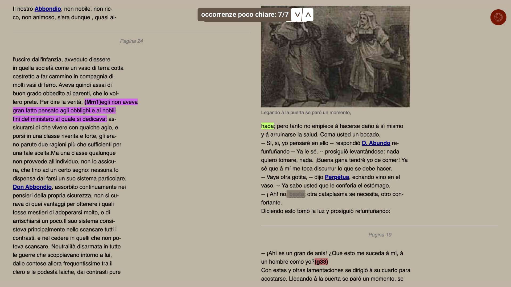

Confronto tra i testi

Questo progetto offre un confronto chiaro e immediato tra i due testi selezionati: il primo capitolo de I Promessi Sposi di Alessandro Manzoni e il primo capitolo de Los Novios di Juan Nicasio Gallego.
Leggi il testo del
Leggi anche il testo del
Usa i due bottoni per consultare entrambi i testi, confrontarli direttamente e per osservare le differenze tra originale e traduzione.
Due differenze saltano subito all’occhio: la lunghezza e le illustrazioni.
Il primo capitolo de I Promessi Sposi conta 36 pagine, mentre Los Novios solo 20.
Inoltre, il testo italiano non ha immagini, mentre la versione spagnola include molte rappresentazioni grafiche.
Sia gli “a capo” che le interruzioni di pagina presenti nei testi a stampa delle due opere, l’originale italiano e la sua traduzione spagnola, sono stati fedelmente riprodotti e mantenuti con cura anche in queste versioni digitali.
In alto a sinistra trovi una legenda colorata che ti aiuta ad identificare facilmente gli elementi principali:
I luoghie i siti sono evidenziati in grassetto e colorati di verde,
Le date sono evidenziati in grassetto e colorati di rosa.
Questi colori aiutano a capire rapidamente le differenze tra i due testi e a seguire meglio la lettura.
Confronta i testi e scopri come la traduzione modifica significato, stile e interpretazione rispetto all’opera originale.
Per concludere, è stata realizzata la cosiddetta comparazione migliorata, una versione più ricca e interattiva rispetto al semplice confronto dei testi.
Invece di limitarsi a mostrare i due testi affiancati, questa versione ti invita ad esplorare, scoprire e persino giocare con le differenze e le somiglianze tra le opere.
In alto a sinistra, una legenda colorata ti guiderà nella lettura:
- I nomi dei personaggi, le loro varianti e le equivalenze spagnole sono evidenziati in grassetto e colorati di blu. Ad esempio, Don Abbondio compare in italiano come D. Abbondio, curato,o semplicemente Abbondio, e in spagnolo come Don Abundo, D. Abundo, or cura: tutti i nomi sono segnalati in blu.
- I luoghi, dai fiumi alle città, con le corrispondenti versioni spagnole sono evidenziati in grassetto e colorati di verde. Ad esempio, il fiume Adda diventa río Ada, mantenendo il verde.
- Le date, sia complete (giorno, mese e anno) sia solo l’anno sono evidenziate in grassetto e colorate di rosa.
- Le parole difficili, poco leggibili o danneggiate nelle edizioni originali. sono evidenziate in grassetto, colorate di grigio chiaro e sottolineate con una riga ondulata.
- Le immagini aggiunte sono evidenzate con il colore azzurro chiaro. Dove l’edizione spagnola contiene un’illustrazione, nel testo italiano appare un riquadro azzurro con scritto “Immagine aggiunta”, a ricordare la rappresentazione mancante.
La comparazione prende come riferimento il primo capitolo italiano de I promessi sposi. Qui puoi osservare non solo le differenze linguistiche e strutturali, evidenziate con colori diversi, ma anche le variazioni ideologiche e interpretative legate alle scelte del traduttore:
- (a"n") Aggiunte spagnole: evidenziate in giallo, con la sigla (a"n"), dove “a” sta per aggiunta e “n” per il numero.
Cliccando sull’etichetta nel testo spagnolo si vede il punto corrispondente nel testo in italiano e viceversa. - (g"n") Omissioni spagnole: evidenziate in rosso, con la sigla (g"n"), dove “o” sta per omissione e “n” per il numero.
Cliccando sull’etichetta nel testo spagnolo si vede il passaggio mancante nel testo in italiano, sempre contrassegnato (g"n"), e viceversa. - (ab"n")Abbreviazioni spagnole: evidenziate in ciano, con la sigla (ab"n"). Alcuni nomi e titoli usati da Manzoni in italiano sono resi in modo diverso nella traduzione spagnola di Gallego, spesso in forma abbreviata. Per rendere il testo più chiaro e aiutarti a seguire il confronto bilingue, i nomi e i titoli completi in italiano sono evidenziati in ciano e preceduti dall’etichetta (ab"n"), dove “ab” indica abbreviazione e “n” il numero progressivo dell’abbreviazione. Come per le aggiunte e le omissioni, cliccando sull’etichetta in italiano, puoi vedere l’appellativo abbreviato corrispondente in spagnolo, anch’esso evidenziato in ciano con la stessa etichetta (ab"n") e viceversa dal testo spagnolo a quello italiano.
- (m"n")Modifiche spagnole: sono evidenziate in viola e contrassegnate dall’etichetta (m"n").
Alcuni passaggi del testo italiano non sono stati aggiunti o omessi nella traduzione spagnola, ma modificati sotto l’influenza del contesto e dell’ideologia spagnola. Questi passaggi sono evidenziati in viola e preceduti dall’etichetta (m"n") in entrambi i testi. Come prima, cliccando sull’etichetta in uno dei testi, puoi vedere il passaggio corrispondente modificato nell’altro testo (e viceversa).
Alcune di queste modifiche, influenzate dal contesto o dall’ideologia spagnola, sono state studiate in dettaglio. Di conseguenza, qui vengono messe in evidenza due varianti di modifiche:- (Mm"n")Modifiche interpretative spagnole studiate da María de las Nieves Muñiz Muñiz Alcune modifiche riguardano l’interpretazione del traduttore dell’opera originale di Manzoni e sono state analizzate in dettaglio dalla nota filologa, traduttrice e italianista spagnola María de las Nieves Muñiz Muñiz nel libro La prima ricezione dei Promessi sposi in Spagna: traduzioni e critica. Queste modifiche interpretative sono evidenziate in viola come le modifiche normali, ma contrassegnate con un’etichetta leggermente diversa (Mm"n"), dove “Mm” indica una modifica studiata da Muñiz Muñiz e “n” il numero della modifica. Come prima, cliccando sull’etichetta nel testo spagnolo, puoi vedere il passaggio corrispondente in italiano e viceversa. Inoltre, passando il cursore sull’etichetta puoi notare un piccolo popup con una spiegazione della modifica e il riferimento allo studio di Muñiz Muñiz.
- (Im"n")Espressioni idiomatiche spagnole studiate da Pecchiari Altre modifiche, in particolare a livello idiomatico, sono state studiate da Beatrice Pecchiari nella sua tesi di laurea magistrale Los Novios. La ricezione dei Promessi sposi nella Spagna dell’Ottocento. Alcune espressioni idiomatiche italiane usate da Manzoni sono state tradotte da Gallego in idiomi spagnoli diversi, che non sempre hanno lo stesso significato. Queste modifiche sono evidenziate in verde chiaro e contrassegnate dall’etichetta (Im"n"), dove “Im” indica modifiche idiomatiche e “n” il numero progressivo. Come prima, cliccando sull’etichetta puoi visualizzare il passaggio corrispondente nell’altro testo, mentre passando il puoi notare un piccolo popup con la spiegazione della modifica idiomatica e il riferimento allo studio di Beatrice Pecchiari.
Il risultato è una lettura dinamica: invece di confrontare passivamente due colonne di testo, l’utente naviga attivamente tra aggiunte, omissioni, abbreviazioni e sottili variazioni di significato. Ogni clic, ogni evidenziazione mostra come un capolavoro italiano del XIX secolo è stato trasformato per un pubblico di lingua spagnola.
Osserva la comparazione fianco a fianco sia a livello strutturale sia a livello semantico e idiomatico,
attrverso
Sviluppi futuri
Immagina una futura versione del progetto in cui, digitando una singola parola nella barra di ricerca, l’intero testo si apre in modi completamente nuovi.
Aggiunte, omissioni, modifiche, abbreviazioni, parole poco chiare, personaggi, date e luoghi, tutti gli elementi accuratamente segnalati, potrebbero apparire immediatamente, evidenziati a colpo d’occhio.
In questo modo puoi immergerti subito nel testo, filtrare ciò che cerchi e risparmiare tempo prezioso.
In pochi istanti, puoi ottenere una visione chiara e completa di tutti gli elementi di suo interesse. È un invito a esplorare, scoprire e interagire con il testo in un modo del tutto nuovo.
Dopo che aver cliccato sul pulsante “cerca”, in alto a destra nella pagina, puoi scegliere tra diverse opzioni di filtro per la ricerca.
In questo esempio, è stata selezionata la categoria “parole poco chiare” tra quelle disponibili: aggiunte, omissioni, modifiche, abbreviazioni, parole poco chiare, personaggi, date e luoghi.
{kind=link}
{kind=link}
Compare quindi un’etichetta nella parte superiore centrale della pagina, che indica quale filtro è stato applicato e quante occorrenze di quell’opzione sono state trovate..

{kind=link}
Puoi anche tenere traccia di queste occorrenze e navigare facilmente tra di esse usando le frecce posizionate accanto all’etichetta, che permettono di spostarsi rapidamente all’occorrenza precedente o successiva.

{kind=link}
Infatti, in questo caso, le occorrenze identificate per “parole poco chiare” sono sette (0/7, 1/7…7/7), e tu hai la possibilità di scorrerle dalla prima all’ultima.

{kind=link}